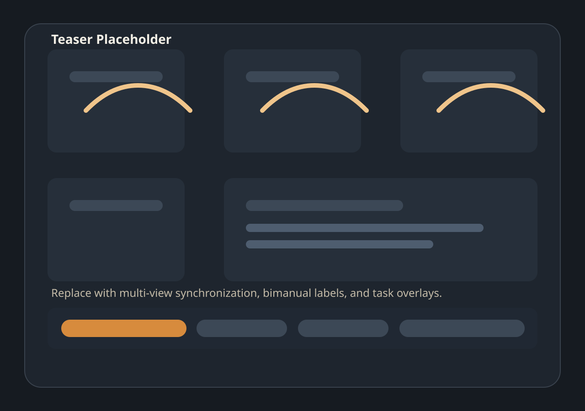

ACM MM 2026 · dataset platform
IMPACT: A Multi-view Industrial Assembly Benchmark for Fine-grained Action Understanding, Procedural Reasoning, and Error Analysis
A task-driven benchmark platform for industrial procedural understanding under multi-view observations, partial observability, and procedural complexity.

Placeholder teaser
Replace with a synchronized multi-view montage, timeline labels,
and representative error cases.
Why IMPACT
Existing activity datasets rarely expose the procedural structure, bimanual coordination, and recovery behavior needed for industrial assembly understanding.
Limitations of prior datasets
- Weak procedural structure and limited recovery modeling.
- Insufficient support for bimanual reasoning under partial observability.
- Few benchmarks separate perception, reasoning, and forecasting errors.
- Limited industrial realism for assembly-centric evaluation.
What IMPACT contributes
- Step-level and hand-specific atomic labels in one benchmark.
- Cross-view temporal alignment and semantic matching.
- Forecasting, state recognition, procedure reasoning, and anomaly analysis.
- Task organization that isolates architectural tradeoffs cleanly.
Dataset Snapshot
The public repository already reflects the benchmark taxonomy and release boundaries. Final scale numbers can be filled in without changing the structure.
Step-level + bimanual atomic
TAS-S captures procedure steps, while
TAS-BL and TAS-BR expose hand-specific
atomic actions.
Synchronized multi-view video
Designed for alignment, semantic matching, and robustness under partial observability.
States, phases, graphs, anomalies
Procedure metadata supports state recognition, step reasoning, compliance analysis, and anomaly diagnosis.
Benchmark-first release
Current release focuses on protocol assets, task wrappers, and method snapshots rather than shipping raw media in-repo.
Supported Tasks
The benchmark is organized as five task groups covering temporal understanding, cross-view understanding, forecasting, procedural reasoning, and error understanding.
Temporal Understanding
TAS-S · TAS-BL · TAS-BR
Dense step-level and bimanual temporal labeling for action segmentation.
Cross-view Understanding
CV-TA · CV-SMR · CV-SMC
Temporal alignment and semantic matching across synchronized views.
Action Forecasting
AF-S · AF-L
Short-term anticipation is released now. Long-horizon forecasting is reserved.
State & Procedure Reasoning
ASR · PSR
Assembly-state recognition and graph-constrained procedure step reasoning.
Error Understanding
PPR-L · PPR-R · ATR-L · ATR-R
Compliance-phase and anomaly-type recognition for failure analysis.
News
Keep the homepage alive as the benchmark evolves. The current page uses placeholders only where the release asset is not public yet.
Benchmark repository released with task wrappers and protocol assets.
Project page launched with placeholders for paper, teaser, and leaderboard links.
Leaderboard, downloadable media, and challenge timeline will be added after public release approval.
Download
The site should make release boundaries obvious. Available assets are explicit, and missing release items remain marked as placeholders.
| Type | Status | Content |
|---|---|---|
| Protocol Assets | Released | Official splits, mappings, labels, and procedure metadata in the repository. |
| Starter Code | Released | Task wrappers, evaluation scripts, and method-specific READMEs. |
| Mini Sample Pack | Placeholder | Small subset for quick-start demos and sanity checks. |
| Raw Media | Placeholder | Full video release and access workflow. |
| Pre-extracted Features | Placeholder | Storage backend and checksum policy to be added later. |
Annotation Schema
IMPACT is strongest when the label space is communicated clearly and compactly.
Temporal labels
Frame-level and segment-level labels support dense sequence evaluation.
Bimanual labels
Left-hand and right-hand atomic labels isolate asymmetric coordination.
State labels
Assembly-state annotations enable direct recognition and indirect reasoning pipelines.
Error labels
Phases and anomaly types support compliance analysis and failure diagnosis.
Benchmark
The benchmark layer is already organized by task and method in the repository. The site summarizes what is runnable now and what is reserved for later release.
Released baselines
TAS:LTContext,ASQuery,DiffAct,FACTCV:I3D,VideoMAE v2,MViTv2ASR:MS-TCN++,VideoMAE v2+Head,Gemini 3.1 ProPSR: indirect and direct graph-based baselinesPPR/ATR: released reasoning and anomaly baselinesAF-S:AVT,ScalAnt,Qwen3VL-8B
Metrics
F1@{10,25,50}and edit score for dense temporal tasks.- Retrieval and matching metrics for cross-view tasks.
- Task-specific metrics for state recognition and step reasoning.
- Anticipation and forecasting metrics for
AF-SandAF-L.
Leaderboard
Public leaderboard URL, submission format, and challenge policy will be added after release.
Resources
The website is the presentation layer. The repository remains the operational layer for reproducible benchmarking.
Paper, Citation, and License
These items are visible early because they matter to both users and reviewers.
Paper & Citation
Paper PDF, project-page paper button, and final author metadata are pending public release.
@inproceedings{impact2026,
title = {IMPACT: A Dataset for Multi-Granularity Human Procedural Action Understanding in Industrial Assembly},
author = {TBD},
booktitle = {ACM Multimedia},
year = {2026}
}License
- Repository-authored code: repository root
LICENSE. - Dataset assets and documentation:
LICENSE-DATA. third_party/: per-directory provenance and license notices.